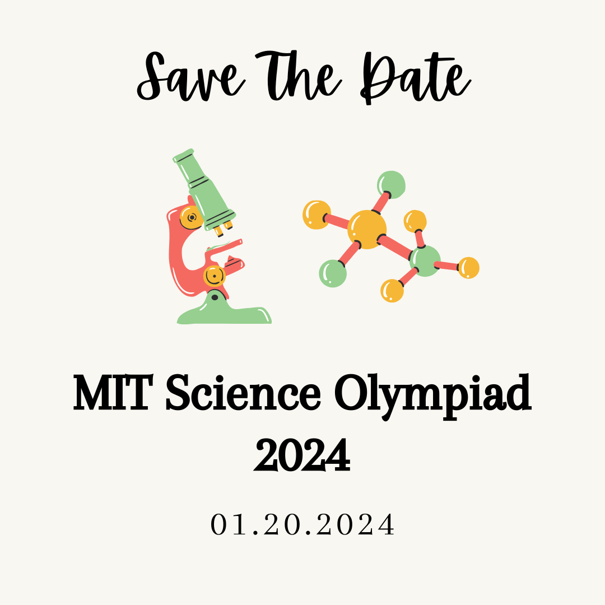

December 25, 2023
We have new information regarding tournament day info, trial events, and required materials.
We have new information regarding tournament day info, trial events, and required materials.
We have updated the team list for the 2024 MIT Science Olympiad Invitational, which can be found here! We apologize for any confusion.
The team list for the 2024 MIT Science Olympiad Invitational has now been posted!
We are pleased to announce that the 10th annual MIT Science Olympiad Invitational Tournament will take place in-person on Saturday, January 20th, 2024 at the MIT campus. We will be running all 23 Division C national events, including lab and engineering events. All events will be written, reviewed, and run by Science Olympiad alumni currently at MIT, national tournament event supervisors, and/or former Science Olympiad competitors from the highest level of competition. This means that coaches will not be required to write tests or otherwise volunteer at the invitational, leaving them free to focus solely on coaching their own teams.
Registration will open on Friday, September 15th, 2023 at 6 PM ET and will close the following Monday, September 25th at 6 PM ET. More details about registration will be available on our website shortly. Teams will be notified of their acceptance on Monday, October 2nd, and a public list of participating teams will be announced on Monday, October 9th.
We will guarantee acceptance of schools that meet either of the following qualifications:
All teams that do not meet the qualifications for guaranteed acceptance will have their acceptance determined by a lottery. As we continue to grow our tournament, we aim to maintain a diverse pool of competitors while also upholding the rigor of our tournament. As such, we still strongly encourage all teams to apply, especially Massachusetts teams, regardless of their reputation or experience level.
Schools that would like to bring two teams can fill out an additional question on the registration form regarding why they need to bring two teams— the answers will be reviewed to make sure as many teams are satisfied as possible.
Please do not hesitate to contact us at scioly@mit.edu if you have any questions. We look forward to the upcoming season!
